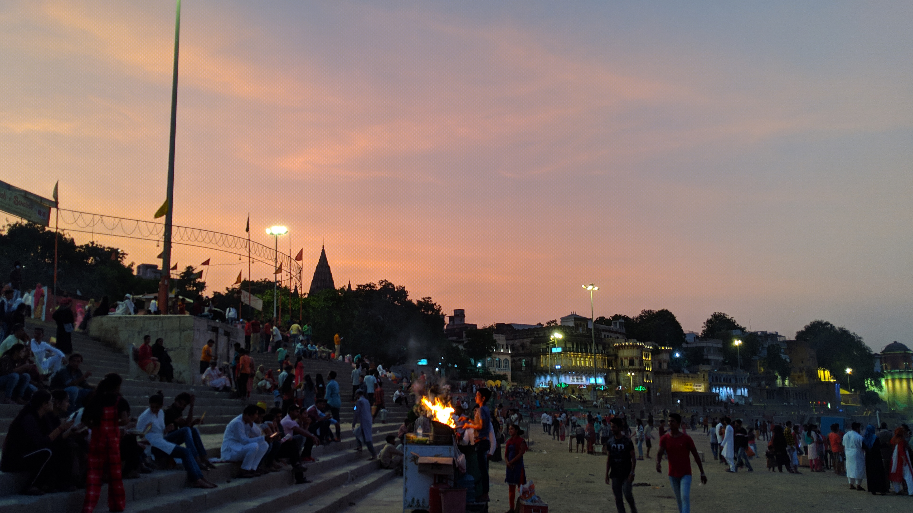
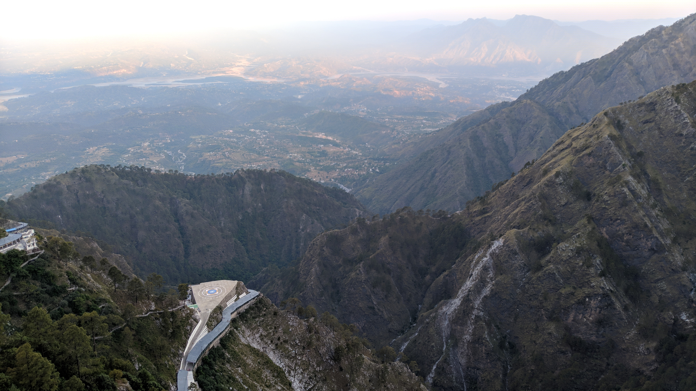
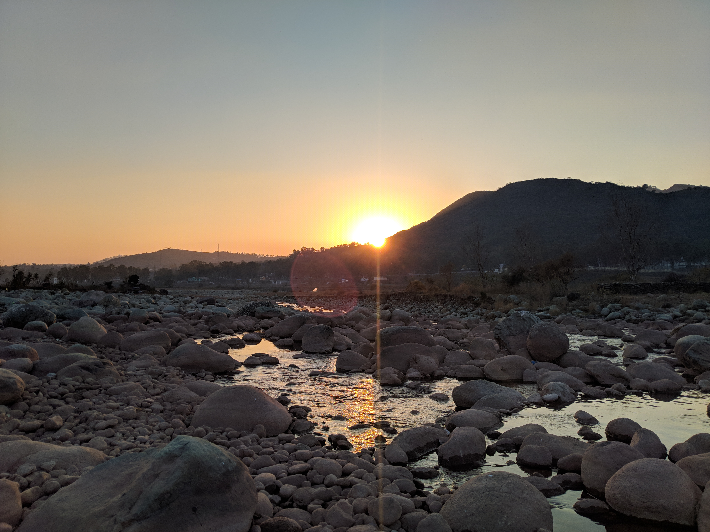

“I declare this world is so beautiful that I can hardly believe it exists.” The beauty of nature can have a profound effect upon our senses, those gateways from the outer world to the inner, whether it results in disbelief in its very existence as Emerson notes, or feelings such as awe, wonder, or amazement. But what is it about nature and the entities that make it up that cause us, oftentimes unwillingly, to feel or declare that they are beautiful?
Most often, it seems to me, we find these things to be beautiful not because of something else they might bring us – a piece of furniture, say, or a ‘delicacy’ to be consumed – but because of the way that the forms of these things immediately strike us upon observation. In fact, one might even think that this experience of beauty is one of the bases for valuing nature – nature is valuable because it is beautiful.
Emerson seems to think that beauty in the natural world is not limited to certain parts of nature to the exclusion of others. He writes that every landscape lies under “the necessity of being beautiful”, and that “beauty breaks in everywhere.” As we slowly creep out of a long winter in the Northeast, I think Emerson would find the lamentations about what we have ‘endured’ to be misguided:
So if we’re sympathetic to the idea that nature, or aspects of it, are beautiful, we might ask ourselves why we experience nature in this way. Emerson says that nature is beautiful because it is alive, moving, reproductive. In nature we observe growth and development in living things, contrasted with the static or deteriorating state of the vast majority of that which is man-made. More generally, he writes: “We ascribe beauty to that which…has no superfluous parts; which exactly answers its end; which stands related to all things”. He cites natural structures as lacking superfluities, an observation that in general has been confirmed by the advancement of biology. Furthermore, he says that whether talking about a human artifact or a natural organism, any increase of ability to achieve its end or goal is an increase in beauty. So in Emerson we might find the resources for seeing evolution and the drive to survive as a beautiful rather than an ugly process, governed by laws that tend to increase reproductive fitness and that we can understand through observation and inquiry. And lastly, Emerson points to the relation between what we take to be an individual and the rest of nature as a quality of the beautiful. This consists in the “power to suggest relation to the whole world, and so lift the object out of a pitiful individuality.” In nature one doesn’t come across individuals that are robustly independent from their environment; rather things are intimately interconnected with their surroundings in ways that we don’t fully understand.

In addition to the immediate experience of beauty based in perception, Emerson suggests that the beauty of the world may also be viewed as an object of the intellect. He writes that “the question of Beauty takes us out of surfaces, to thinking of the foundations of things.” In other words, we can also experience the world as beautiful because of its rational structure and our ability to grasp that structure through thought. Think for instance of the geometric structure of a crystal, or snowflake, or nautilus shell. Or consider the complexity of the fact that the reintroduction of the wolf in Yellowstone National Park changed the course of the rivers due to a chain reaction of cause and effect through the food web, a process called a trophic cascade. This reinforces Emerson’s emphasis on the interconnection between all members of the natural world; as observers of nature we are confronted with one giant, complex process that isn’t of our own making, but that we can also understand, and get a mental grasp on, even if only partially, and be awe-struck in that process of understanding.
There is thus an emotional or affective component in the beauty of the intellect just as there is in the immediate beauty of perception. If we destroy the natural world, we take away the things that we can marvel at and experience awe towards in these two ways. And this experience of the beautiful through the intellect may reinforce our attributing value to nature here as well, but a deeper kind of value, the intrinsic value I talked about in the last essay. Here it is not only that nature is valuable because it is beautiful, but nature is beautiful because it possesses intrinsic value, grounded in its intelligible structure. Thus we see a close parallel between goodness and beauty in nature. We can find an objective basis for goodness and beauty in nature, namely its intelligible structure, but also see that nature is valuable and beautiful for us, with the particular apparatus that nature has given us for navigating our way through the world.
He should know that the landscape has beauty for his eye, because it expresses a thought which is to him good: and this, because of the same power which sees through his eyes, is seen in that spectacle